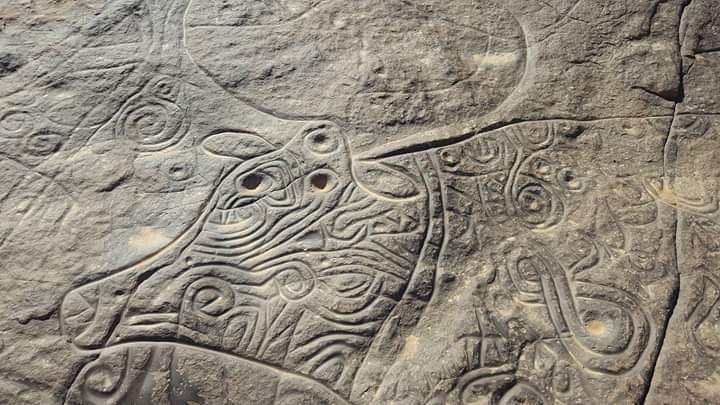
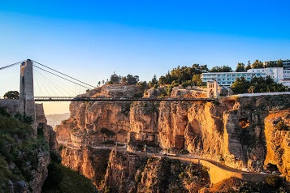
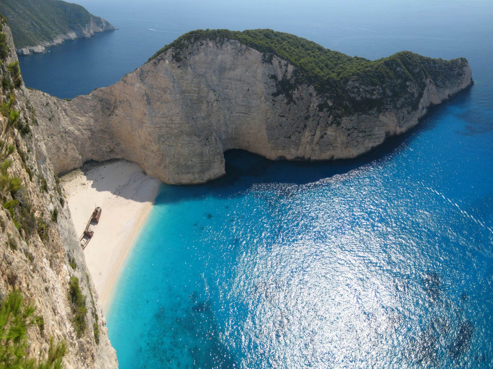

Un pays amer comme la mort, doux comme la vie, sucré comme l'amour
De par sa proximité géographique, historique, culturelle, mais aussi humaine,
l’Algérie est un pays auquel se sentent attachés beaucoup de Français. Ce voisin
d’en face reste pourtant assez méconnu. Après une décennie noire pendant laquelle
le tourisme fut mis entre parenthèses, l’Algérie ouvre ses portes et nous invite
à explorer ses contrées magnifiques.
Car cet immense pays a de quoi satisfaire les attentes du voyageur. Au Nord de
l’Algérie, on apprécie cette longue bande fertile dont le littoral est épargné
par le béton et où les montagnes majestueuses de Kabylie ont conservé leur authenticité.
L’amateur d’histoire se perd dans les ruelles des vieilles casbahs et flâne au milieu des
vestiges laissés au fil des siècles par les peuples et les empires conquérants.
Aux portes du désert algérien, à l’ombre d’une oasis, on goûte à l’hospitalité légendaire des
hommes du Sud. Puis loin enfin, s’étend le Sahara, océan de sable et de pierres que l’on peut
contempler au coucher du soleil depuis le plateau de l’Assekrem, qui fut le lieu de méditation du Père de Foucauld.
L'Algérie a de nombreuses richesses à offrir, tant sur le plan culturel que naturel. C’est une chance qu’il n’ait
pas cédé à la tentation du tourisme de masse, profitons-en pour lui rendre visite avant qu’il ne soit trop tard !
découverte
Histoire
L’Algérie, en raison de sa tradition de terre d’accueil et les multiples civilisations
qui l’ont traversée, a hérité d’une histoire très riche qui s’exprime par des vestiges d'époques variées.
C’est ainsi que l'Afrique, la Méditerranée, l’Europe et l’Orient marquèrent de leurs influences spécifiques
le cheminement historique de l’Algérie.
Les premiers vestiges archéologiques notables sont d'âge préhistorique et remontent à l'époque néolithique,
comme ceux du parc national du Tassili que l'on considère comme le musée à ciel ouvert le plus étendu au monde.
Plus tard, les Berbères construisirent plusieurs sites comme Medracen, Mausolée royal de Maurétanie, Mausolée de
Béni Rehnane à Siga dans la Wilaya d'Aïn Témouchent, ou encore le site de Sauma El Khroub près de Cirta qui
se trouve dans la ville de Constantine. De plus, plusieurs tumuli, dolmens, grottes, tombeaux Djeddar à Frenda,
etc., attestent les pratiques funéraires berbères.
L’époque romaine a laissé un nombre impressionnant de vestiges, dont les plus importants se trouvent à Tipaza, Timgad,
Lambèse, N'Gaous, Zana, Calama, M'daourouch, Thagaste, Cherchell, Tamentfoust, Djemila, Tiddis, Tigzirt, Dellys, Hippone,
tébessa. De plus, Apulée ou saint Augustin ont été des penseurs de renomain.
Culture
La culture algérienne est marquée par sa diversité, sa richesse, grâce à notamment à ses différentes régions,
aux emprunts à d'autres peuples, ainsi que par sa diffusion et à travers le monde. Chaque région, chaque ville ou oasis constitue
un espace culturel particulier. La Kabylie, les Aurès, l'Algérois, les Hauts plateaux, la vallée du Mzab, le Gourara, le Hoggar,
la Saoura, l'Oranie sont chacune des régions avec des particularités culturelles et parfois linguistiques.
Les premières manifestations culturelles sur le territoire de l'Algérie actuelle sont vieilles de milliers d'années,
tels les fascinants témoignages d'art rupestre du tassili n'Ajjer, en passant par tous les beaux édifices érigé tout au long
de l'histoire de ce pays, en arrivant à l'artisanat toujours très présent et richissime. L'art algérien reflète les chapitres
d'histoire qu'a passé ce pays et les différentes influences qu'il a eues.
Des musées consacrés à une grande variété de thèmes, dont le musée national des beaux-arts, de riches bibliothèques,
comme la Bibliothèque nationale d'Algérie, et tout un patrimoine immobilier, artisanal et industriel, témoignent du développement de la culture algérienne.
Patrimoine et tourisme
L'Algérie compte 7 sites classés au patrimoine de
l'Unesco.
L'Algérie est le plus grand pays du continent africain et le 10e pays au monde en superficie totale. Situé en Afrique du Nord, une des
principales attractions touristiques en Algérie est le Sahara, le plus grand désert au monde. l'Algérie possède les plus hautes dunes de
sables d'Afrique à Mer de sable de Isaouane-n-Tifernine dans la wilaya d'Illizi. L'Algérie est membre de
l'Organisation mondiale du tourisme depuis .
quelques sites touristiques
L'Algérie bénéficie d'atouts naturels importants tel que ses plages en général encore
à l'état sauvage, des paysages et des zones comme le Sahara algérien
Parc culturel du Tassili
Le parc culturel du Tassili n'Ajjer
situé à proximité de la ville de Djanet, dans la wilaya de Illizi, dans le Sud de l'Algérie.
Constantine
Est une
cité antique située sur le territoire de la commune éponyme de Timgad,
dans Wilaya de Batna dans la région des Aurès, au Nord-Est de l'Algérie.
la corniche en Kabylie
La Kabylie est une région historique
située dans le nord de l'Algérie et à l'est d'Alger.
Terre de montagnes densément peuplées, elle est entourée de plaines littorales à l'ouest et à l'est, au nord par la
Méditerranée et au sud par les Hauts Plateaux. Dénuée d'existence administrative globale, elle tient son nom des Kabyles, population de culture et de traditions berbères, dont
elle est le foyer. Son histoire a fait d'elle un pôle de résistance aux conquérants successifs, mais aussi le point d'appui
de plusieurs entreprises dynastiques, et l'a placée au premier plan des mouvements pour la reconnaissance de l'identité amazigh berbère
dans l'Algérie et l'Afrique du Nord contemporaines.
Gastronomie
LLa cuisine algérienne
se caractérise par une richesse tirée de la production terrestre et marine.
C'est une cuisine méditerranéenne et nord-africaine ayant pour substrat la cuisine berbère.
Elle offre une composante de mets variés selon les régions et selon les saisons,
ce qui donne une palette culinaire très diversifiée.
Cette cuisine qui fait appel à une multitude de produits, reste tout de même celle des
légumes et céréales qui, depuis toujours, sont produites avec abondance dans le pays,
autrefois appelé « grenier de Rome » puis « grenier de l'Europe». De plus, le passé riche
de l'Algérie a contribué à l'acheminement d'une abondance de mets originaires de différentes périodes et régions du monde.
En effet, les conquêtes ou les déplacements démographiques vers le territoire algérien ont
été l'un des principaux facteurs d'échanges entre les différents peuples Berbères, Arabes, Turcs, Andalous, Français et Espagnols.
Parmi toutes les spécialités dont dispose l'Algérie, les plus fameuses sont le couscous, reconnu comme plat national, ainsi que
les pâtisseries traditionnelles qualifiées de « pâtisseries orientales » dans les pays occidentaux. Bien qu'historiquement
transmise de façon orale, de génération en génération, il existe de plus en plus d'ouvrages consacrés à la cuisine algérienne.
 La cuisine algérienne
se caractérise par une richesse tirée de la production terrestre et marine.
C'est une cuisine méditerranéenne et nord-africaine ayant pour substrat la cuisine berbère.
Elle offre une composante de mets variés selon les régions et selon les saisons,
ce qui donne une palette culinaire très diversifiée.
Cette cuisine qui fait appel à une multitude de produits, reste tout de même celle des
légumes et céréales qui, depuis toujours, sont produites avec abondance dans le pays,
autrefois appelé « grenier de Rome » puis « grenier de l'Europe». De plus, le passé riche
de l'Algérie a contribué à l'acheminement d'une abondance de mets originaires de différentes périodes et régions du monde.
En effet, les conquêtes ou les déplacements démographiques vers le territoire algérien ont
été l'un des principaux facteurs d'échanges entre les différents peuples
La cuisine algérienne
se caractérise par une richesse tirée de la production terrestre et marine.
C'est une cuisine méditerranéenne et nord-africaine ayant pour substrat la cuisine berbère.
Elle offre une composante de mets variés selon les régions et selon les saisons,
ce qui donne une palette culinaire très diversifiée.
Cette cuisine qui fait appel à une multitude de produits, reste tout de même celle des
légumes et céréales qui, depuis toujours, sont produites avec abondance dans le pays,
autrefois appelé « grenier de Rome » puis « grenier de l'Europe». De plus, le passé riche
de l'Algérie a contribué à l'acheminement d'une abondance de mets originaires de différentes périodes et régions du monde.
En effet, les conquêtes ou les déplacements démographiques vers le territoire algérien ont
été l'un des principaux facteurs d'échanges entre les différents peuples {kind=link}
{kind=link}
{kind=link}